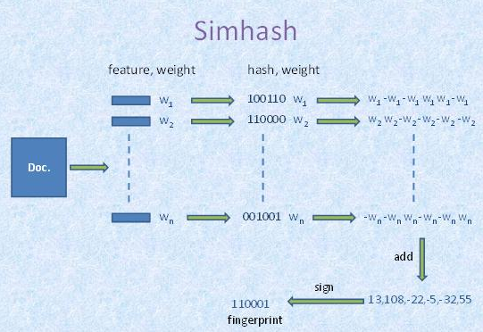

2,460 words in total, 9 minutes required. 1. 引言相似度计算用于衡量对象之间的相似程度，在数据挖掘、自然语言处理中是一个基础性的过程。其中的关键技术主要是两个部分，对象的特征表示，特征集合之间的相似关系。在信息检索、网页判重、推荐系统中，都涉及到对象之间或者对象和对象集合的相似性的计算。而针对不同的应用场景，受限于数据规模、时间空间开销等的限制，相似度计算方法的选择又会有所区别和不同。 以下会针对不同特点的应用，进行一些常用的相似度计算方法进行介绍。 2. 向量空间模型向量空间模型（Vector space model）是应用最广泛的一个基础相似度计算模型，在该模型中，每个对象映射为一个特征向量。其中计算相似度的方法有欧氏距离和余弦相似度等。 作为一个应用广泛的模型，向量空间模型在现有很多应用中仍然起着至关重要的作用，也是很多扩展方法的基础。 3. 基于hash方法的相似计算基于hash的相似度计算方法，是一种基于概率的高维度数据的维度削减的方法，主要用于大规模数据的压缩与实时或者快速的计算场景下，基于hash方法的相似度计算经常用于高维度大数据量的情况下，将利用原始信息不可存储与计算的问题转化为映射空间的可存储计算问题。 在海量文本重复性判断方面，近似文本查询方面有比较多的应用，google的网页去重[1]，google news的协同过滤[2][3]等都是采用hash方法进行近似相似度的计算，比较常见的应用场景Near-duplicate detection、Image similarity identification、nearest neighbor search，常用的一些方法包括I-match，Shingling、Locality-Sensitive Hashing族等方法，下面针对几种常见的hash方法进行介绍。 3.1 minhash方法介绍minhash方法是Locality-sensitive hashing[4][5]算法族里的一个常用方法，其基本的思想是，对于每一个对象的itemlist，将输入的item进行hash，这样相似的item具有很高的相似度被映射到相同的buckets里面，这样尽量保证了hash之后两个对象之间的相似程度和原来是高相似的，而buckets的数量是远远小于输入的item的，因此又达到降低复杂度的目的。 minhash方法用Jaccard进行相似度的计算方法。 $Jac(c_i, c_j) = \frac{c_i \cap c_j}{c_i \cup c_j}$ 当两个集合越相似，则该值越接近1，否则越接近0。 用minhash方法，将一个集合映射到[0-R-1]之间的值，以相同的概率随机的抽取一个[0-R-1]的排列，依次排列查找第一次出现1的行。 C1 C2 C3 C4 R1 1 0 0 1 R2 0 0 1 0 R3 0 1 0 1 R4 1 0 1 1 R5 0 0 1 0 设随机排列为43201($R5-R4-R3-R1-R2$)，对于$C1$列，第一次出现1的行是$R4$，所以$h(C1) = 3$，同理有$h(C2)=2$, $h(C3)=4$, $h(C4)=3$。通过多次抽取随机排列得到$n$个minhash函数$h1,h2,\ldots,hn$，依此对每一列都计算$n$个minhash值。对于两个集合，看看$n$个值里面对应相等的比例，即可估计出两集合的Jaccard相似度。 可以把每个集合的$n$个minhash值列为一列，得到一个$n$行$C$列的签名矩阵。因为$n$可远小于$R$，这样在压缩了数据规模的同时，仍能近似计算出相似度。 3.2 simhash方法介绍simhash方法是在大文本重复识别常用的一个方法，该方法主要是通过将对象的原始特征集合映射为一个固定长度的签名，将对象之间的相似度的度量转化为签名的汉明距离，通过这样的方式，极大限度地进行了降低了计算和存储的消耗。 3.2.1 签名计算过程该方法通过对输入特征集合的计算步骤可以描述如下： 将一个$f$维的向量$V$初始化为0；$f$位的二进制数$S$初始化为0； 对每一个特征：用传统的hash算法对该特征产生一个$f$位的签名$b$。对$i=1$到$f$： 如果$b$的第$i$位为1，则$V$的第$i$个元素加上该特征的权重； 否则，$V$的第$i$个元素减去该特征的权重。 如果$V$的第$i$个元素大于0，则$S$的第$i$位为1，否则为0； 输出$S$作为签名 通过上述步骤将输入的表示对象的特征集合转化为该对象的一个签名，在完成签名之后，度量两个对象的相似度的差异即变成了度量二者的指纹的$K$位的差异情况。 simhash过程图示 3.2.2 汉明距离查找优化对于如何快速查找出某一个签名是否与其存在最大差异不超过$K$个bit的指纹，Detecting Near-Duplicates for Web Crawling这篇论文中进行了介绍。该查找方法的基本思想是利用空间换时间的方法，该方法的依据是需要查找的两个指纹的差异很小，这样可以通过将原始指纹进行分块索引，如果两个指纹的差异很小，则合理的分块后，根据鸽笼原理，其中存在一定数量的块是一致的，通过利用相同的块进行相似的指纹的召回，只需要比对召回的块中有差异的块的bit差异，这样减少了需要比对的数量，节省了比对的时间开销。 3.3 小结hash方法的相似度计算的主要应用场景，一般是针对大规模数据进行压缩，在保证效果损失可接受的情况下，节省存储空间，加快运算速度，针对该方法的应用，在目前的大规模的互联网处理中，很多相似度的计算都是基于这种近似性的计算，并取得了比较好的效果。 4. 基于主题的相似度计算传统的BOW（bag-of-words）模型，一般都会建立在特征独立假设的基础上，按照特征向量的匹配情况来度量对象之间的相似度，但是在实际的应用中，很多时候特征之间存在着很多的关联关系，二者在传统的BOW模型中无法解决。 在这个基础上，基于主题的相似度计算引入了主题的概念，通过主题的思想，建立起基本特征与对象的中间层的关联关系，主题的概念的引入，主要是在原有的基本特征粒度的基础上，引入了更为丰富的隐含层特征，提高了相似性计算的效果。 常用的主题分析方法包括Latent Semantic Analysis（LSA）、 Probabilitistic Latent Semantic Analysis（PLSA）、Latent Dirichlet Allocation（LDA）。这些方法在分类，聚类、检索、推荐等领域都有着很多的应用，并取得了比较好的效果。下面就LSA及PLSA方法进行简要介绍。 4.1 LSALSA[6][7]模型认为特征之间存在某种潜在的关联结构，通过特征-对象矩阵进行统计计算，将高维空间映射到低纬的潜在语义结构上，构建出LSA空间模型，从而提取出潜在的语义结构，并用该结构表示特征和对象，消除了词汇之间的相关性影响，并降低了数据维度。增强了特征的鲁棒性。 LSA利用奇异值分解来进行计算。 4.2 PLSAPLSA[8][9]模型是由Hofmann提出的用于文本检索的概率生成模型，与相比较于LSA，PLSA是基于概率模型的，并直接引入了潜在class变量 。PLSA和其相关的变形，在分类、聚类、检索等方面，特征相关性计算等方面，获得了广泛的应用，并取得了比较好的效果。 4.3 小结主题方法的引入，在一定程度上弥补了BOW的假设的独立性，在工业中，主题的方法也越来越多的应用到实际的机器学习中，包括在图像处理领域、传统的分类、聚类、检索等方面，都取得了比较好的效果。 结语相似度的计算在数据挖掘方面有着广泛的应用，根据不同的应用场景，各种方法各有其优劣特点，对于相似度效果的影响，除了方法本身之外，合理有效的特征的选择和使用也是至关重要的，同时，根据应用场景的不同，选择合理的方法，对于解决问题，有着重要的作用。 引用1.G.S. Manku, A. Jain, A.D. Sarma. Detecting Near-Duplicates for Web Crawling. WWW, 2007. ↩2.A. Das, M. Datar, A.Garg. Google News Personalization: Scalable Online Collaborative Filtering. WWW, 2007. ↩3.http://en.wikipedia.org/wiki/MinHash. ↩4.M. S. Charikar. Similarity estimation techniques from rounding algorithms. STOC, 2002. ↩5.http://en.wikipedia.org/wiki/Locality-sensitive_hashing. ↩6.K. Dave, S. Lawrence, and D. Pennock. Mining the peanut gallery: opinion extraction and semantic classification of product reviews. In Proceedings of the 22th International World Wide Web Conference, Budapest, Hungary, 2003. ↩7.http://en.wikipedia.org/wiki/Latent_semantic_analysis. ↩8.T. Hofmann. Probabilistic Latent Semantic Analysis. In Proceedings of the 15th Conference on Uncertainty in AI (1999). ↩9.Y. M kim, J. F. Pressiot M. R.Amini etc. An Extension of PLSA for Document Clustering. CIKM 2008. ↩ ← Previous Post Next Post→ To show LiveRe comment, please use JavaScript Table of Contents 1. 引言2. 向量空间模型3. 基于hash方法的相似计算3.1 minhash方法介绍3.2 simhash方法介绍3.2.1 签名计算过程3.2.2 汉明距离查找优化3.3 小结4. 基于主题的相似度计算4.1 LSA4.2 PLSA4.3 小结结语引用